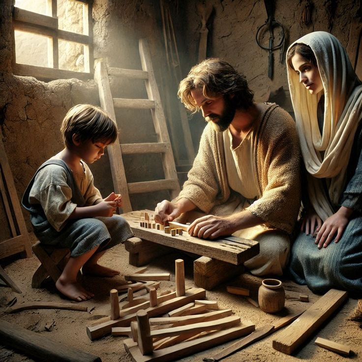
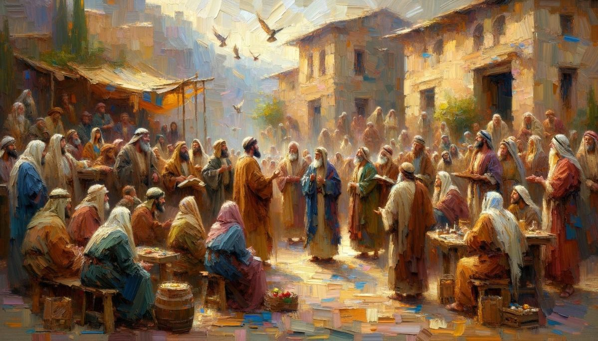
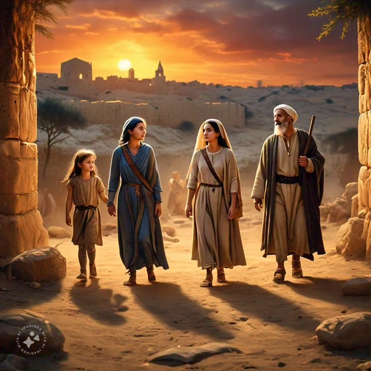
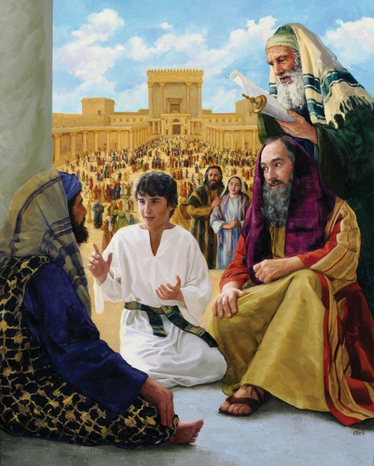
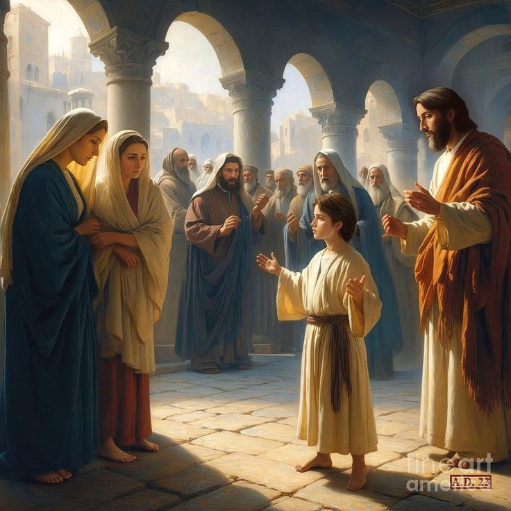
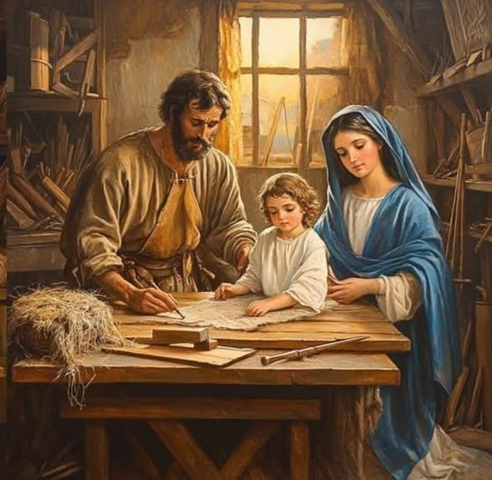

The Childhood and Growth of Jesus
"After that, Jesus went back to Nazareth with His parents and lived in obedience to them. He grew in wisdom, stature, and in favor with God and man. Everyone who saw Him said, “This child truly has the grace of God upon Him..”
The Childhood and Growth of Jesus

The Childhood and Growth of Jesus
இயேசுவின் சிறுவயதும் வளர்ச்சியும்
Jesus grew up in a small, peaceful town called Nazareth. He worked as a carpenter alongside His earthly father, Joseph. His mother, Mary, lovingly raised Him with care and devotion. Their family lived a simple life — but their home was filled with love, prayer, and faith. Even as a child, Jesus was full of wisdom and found favor with God and with everyone around Him. He was kind, gentle, and always ready to help others.
இயேசு நாசரேத் என்ற சிறிய, அமைதியான ஊரில் வளர்ந்தார். அவர் தந்தை யோசேப்புடன் சேர்ந்து தச்சுக்காரராக பணியாற்றினார். அவர் தாயார் மரியாள், அவரை அன்புடன் வளர்த்தாள். அந்த குடும்பம் எளிமையான வாழ்க்கை வாழ்ந்தது — ஆனால் அங்கே அன்பு, பிரார்த்தனை, விசுவாசம் நிறைந்திருந்தது. இயேசு சிறுவயதிலிருந்தே மிகுந்த ஞானமுள்ளவராகவும், தேவனுக்குப் பிரியமானவராகவும் இருந்தார். அவர் எல்லோரிடமும் அன்பாகவும் உதவிசாலியாகவும் நடந்தார்

The Journey to the Passover Festival
பஸ்கா விழாவுக்கான பயணம்
When Jesus was twelve years old, His parents, Joseph and Mary, traveled to Jerusalem for the annual Passover festival — a sacred event where Jewish families came together to worship and thank God. It was a great spiritual celebration, filled with joy, prayers, and songs of praise.
ஒரு நாள், இயேசு பன்னிரண்டு வயதானபோது, அவரது பெற்றோர் யோசேப்பும் மரியாளும், யூதர்களின் வருடாந்திர பஸ்கா விழாவுக்காக யெருசலேம் நகரத்துக்குப் பயணித்தனர். இந்த விழா யூதர்களுக்கு மிகப்பெரிய ஆன்மீக நிகழ்வு; அவர்கள் அனைவரும் தேவனைப் புகழ்ந்து, நன்றி செலுத்துவதற்காக ஆலயத்துக்குச் செல்வார்கள்.

Jesus Goes Missing on the Journey Home
திரும்பும் பயணத்தில் காணாமல் போன இயேசு
After the festival ended, Joseph and Mary began their journey back to Nazareth. They thought Jesus was traveling with relatives or friends. But after a full day’s journey, they realized He was nowhere to be found They called His name, searched among the crowd — but He was missing. With hearts full of worry and tears in their eyes, Mary and Joseph returned to Jerusalem to search for Him.
விழா முடிந்ததும், யோசேப்பும் மரியாளும் தங்கள் ஊரான நாசரேத் நோக்கி திரும்பத் தொடங்கினர். அவர்கள் நினைத்தார்கள் — “இயேசு நம் உறவினர்களோடு வந்திருப்பார்” என்று. ஆனால் ஒரு நாள் பயணித்த பிறகு, அவர் எங்கும் இல்லை என்று அவர்கள் உணர்ந்தனர்! அவரது பெயரை அழைத்தும், இடமெல்லாம் தேடியும் — அவர் காணப்படவில்லை. மரியாளும் யோசேப்பும் மிகுந்த கவலையுடன், யெருசலேமுக்கு மீண்டும் திரும்பினர்.

Finding Jesus in the Temple
ஆலயத்தில் இயேசுவை கண்டனர்
After three long days, they finally found Jesus in the Temple He was sitting among the teachers and scholars, listening to them and asking deep, thoughtful questions. Everyone who heard Him was astonished at His understanding and wisdom. Though He was only a boy, the Spirit of God clearly shone through Him.
மூன்று நாட்கள் தேடிய பிறகு, அவர்கள் தேவ ஆலயத்தில் இயேசுவை கண்டனர் அவர் அங்கே பண்டிதர்களும் ஆசிரியர்களும் உடன் அமர்ந்து, தேவனுடைய வார்த்தைகள் குறித்து பேசிக் கொண்டிருந்தார். அவர் கேள்வி கேட்டு, பதிலளித்தார், அவரது ஞானமும் புத்தியுமாக அனைவரையும் ஆச்சரியப்படுத்தியது! அவர் சிறுவனாக இருந்தாலும், அவருள் தேவனுடைய ஆவி வெளிப்பட்டது.
Mary’s Concern
மரியாளின் கவலை
When Mary saw Him, she said with tears and relief, “Son, why have You done this to us? Your father and I have been so worried!” Her words carried both love and pain — a mother’s anxious heart.
அவரை பார்த்ததும் மரியாள் சொன்னாள்: “மகனே, நீ எங்கே இருந்தாய்? நாங்களும் உன் தந்தையும் மிகவும் கவலைப்பட்டோம்!” அவர் முகத்தில் கவலையும் அன்பும் கலந்திருந்தது.

Jesus’ Divine Reply
இயேசுவின் தெய்வீக பதில்
Then Jesus answered calmly and confidently: “Did you not know that I must be in My Father’s house?” This was not a child’s simple reply — it was a divine revelation. At that moment, Jesus revealed the purpose of His life — to do His Heavenly Father’s will. Mary and Joseph did not fully understand His words then, but they sensed the beginning of something holy.
அப்போது இயேசு அமைதியாகவும் தன்னம்பிக்கையுடனும் சொன்னார்: “நான் என் பிதாவின் வீட்டில் இருக்க வேண்டியது இல்லையா?” இந்த வார்த்தைகள் ஒரு சிறுவனின் பதிலாக இல்லை — இது ஒரு தெய்வீக உணர்வின் வெளிப்பாடு. அவர் தனது வாழ்க்கையின் நோக்கம் என்ன என்பதை அந்தக் கணத்திலேயே வெளிப்படுத்தினார். அந்தச் சொல்லின் பொருள் யோசேப்பும் மரியாளும் அப்போது முழுமையாகப் புரிந்து கொள்ளவில்லை, ஆனால் அது இயேசுவின் தெய்வீக அழைப்பின் தொடக்கம்.

Obedience and Growth
கீழ்ப்படிதலும் வளர்ச்சியும்
After that, Jesus went home with His parents to Nazareth. He lived in obedience to them, helping, learning, and growing each day. He grew in wisdom and stature, and in favor with God and with man. Everyone who saw Him knew He was filled with God’s grace.
பின்னர்
“The experience of the young Jesus in the Temple was the first glimpse of His divine mission. It revealed who He truly was — the Son of God, who would one day become the Savior of the world.”